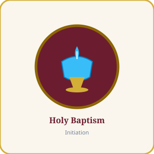

Christian Initiation
Holy Baptism
"Go therefore and make disciples of all nations, baptizing them in the name of the Father and of the Son and of the Holy Spirit." (Matthew 28:19)
The foundation of the entire Christian life and door to the spiritual life. Baptism cleanses original sin, makes us adopted children of God, and incorporates us into the Mystical Body of Christ.
Requirements: Copy of birth certificate, registered Catholic parents, confirmed Catholic godparents, and attendance at pre-baptism class.